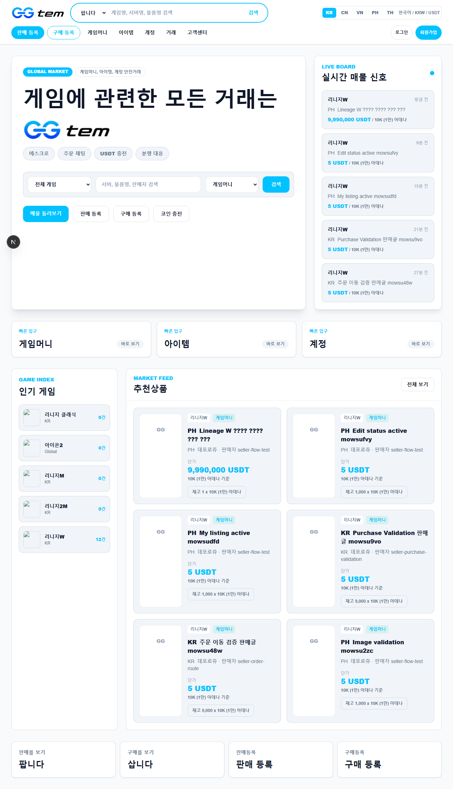
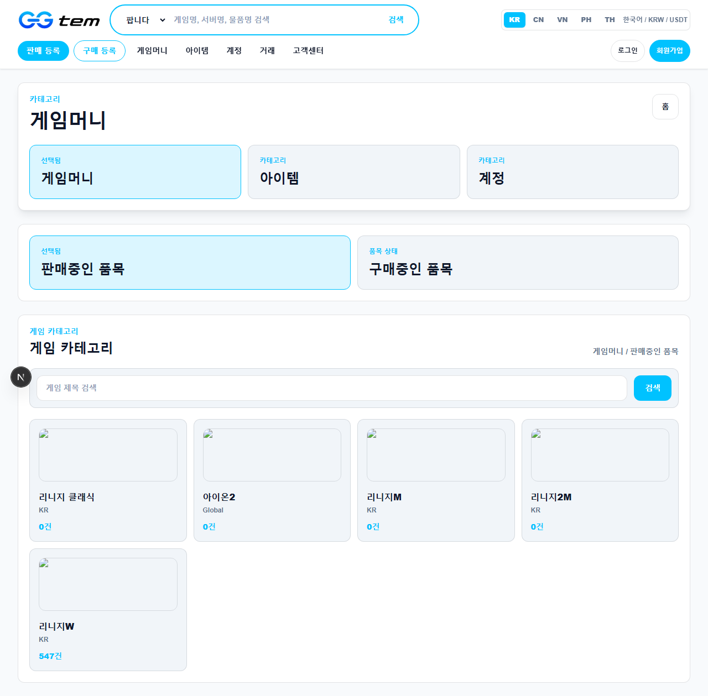
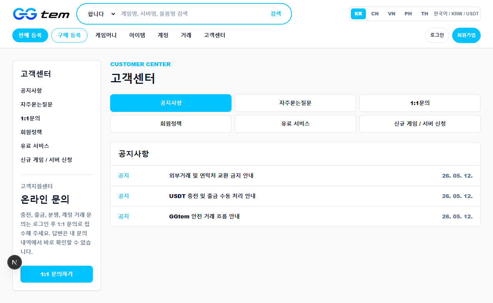
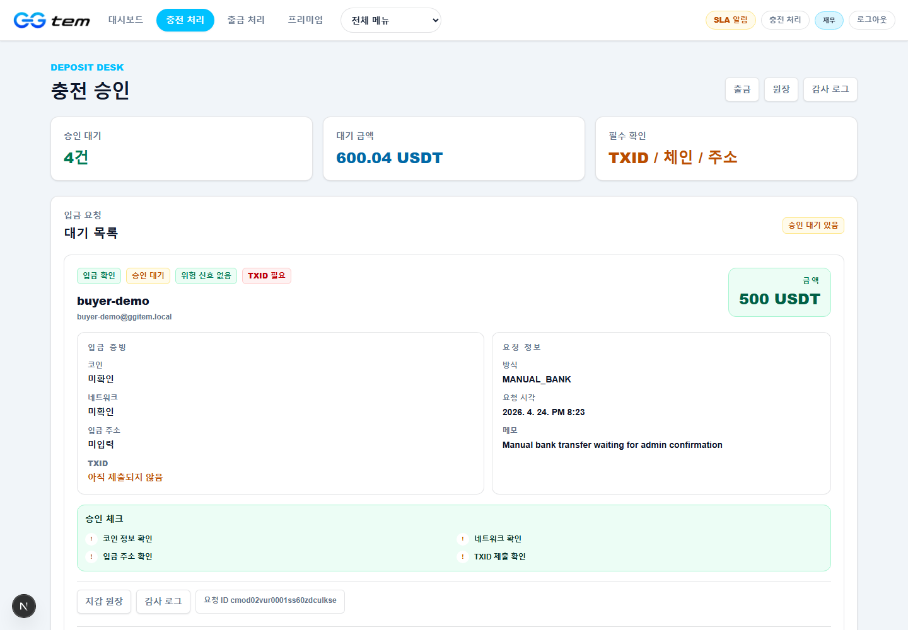
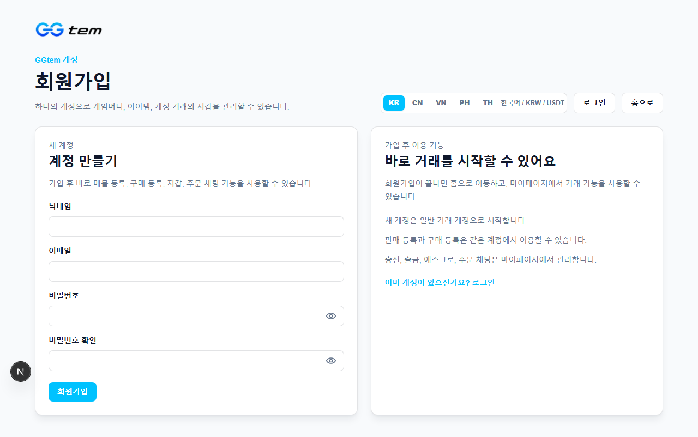
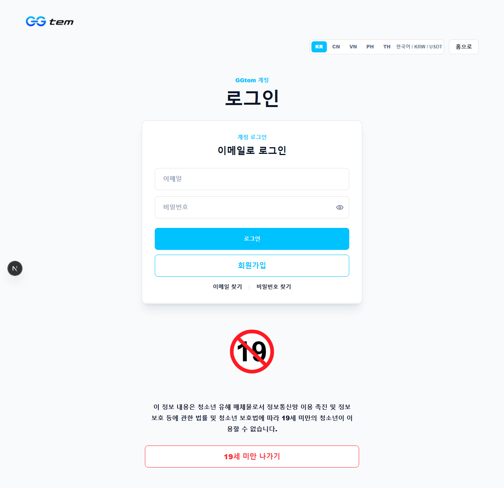
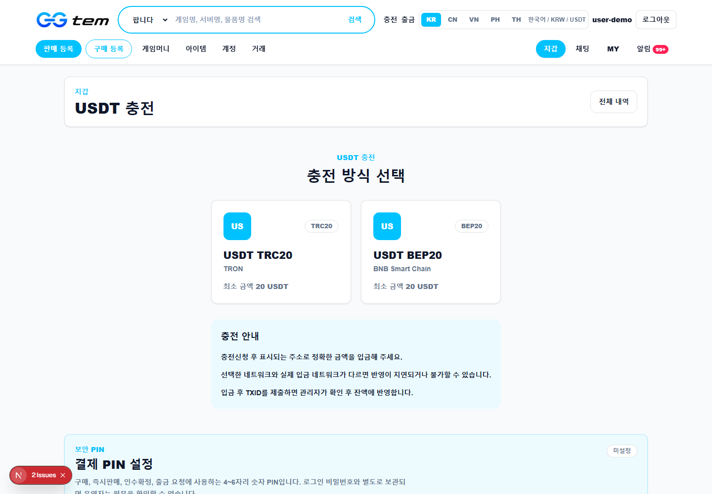
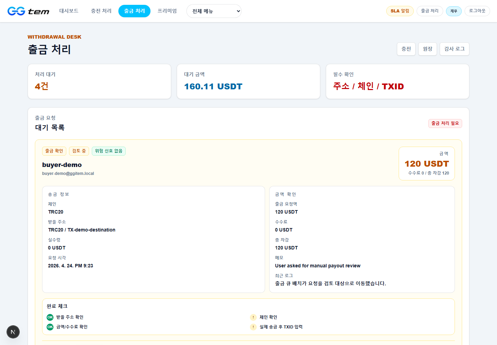
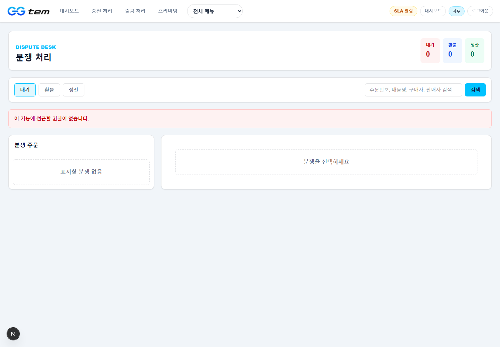

실제 UI로 이해하는
게임 아이템 거래 플랫폼
이 문서는 발표용 장표가 아니라, 종이로 받은 사람이 혼자 읽어도 GGtem의 서비스 구조, 유저/운영자 화면, 그리고 돈의 흐름을 이해할 수 있도록 작성한 인쇄용 사업계획서입니다.

목차와 요약
핵심 요약
GGtem은 게임머니, 게임아이템, 게임계정 거래를 판매등록, 구매등록, 즉시구매, 즉시판매, 주문 채팅, 지갑 충전/출금, 관리자 정산/분쟁 처리까지 하나의 운영 콘솔로 연결하는 거래 플랫폼입니다. 단순히 상품을 올리고 연락하는 게시판이 아니라, 돈이 언제 들어오고 어디에 잠기며 누구에게 풀리는지를 지갑 버킷과 원장으로 추적하는 구조입니다.
| 구분 | 설명 | 사업적 의미 |
|---|---|---|
| 거래 진입 | 판매 매물과 구매 요청을 모두 받을 수 있음 | 공급과 수요를 동시에 확보 |
| 신뢰 장치 | 구매 금액은 주문 완료 전까지 에스크로에 잠김 | 사기 위험과 정산 분쟁 감소 |
| 운영 장치 | 충전, 출금, 분쟁, 고객센터를 어드민에서 처리 | 운영자가 상태와 다음 액션을 판단 |
| 수익 모델 | 거래 수수료, 출금 수수료, 프리미엄 노출 | 완료 이벤트 기반 매출 인식 |
1. 서비스 한 줄 정의
GGtem은 글로벌 게임 유저가 게임머니, 아이템, 계정을 안전하게 사고팔 수 있도록 거래 등록, 에스크로 결제, 주문 채팅, 지갑 원장, 관리자 분쟁 처리를 연결한 게임 아이템 거래 플랫폼입니다.
기존 거래의 문제
| 문제 | 왜 중요한가 |
|---|---|
| 상대방 신뢰 부족 | 구매자는 돈을 먼저 보낼 때 사기 위험을 느끼고, 판매자는 전달 후 미확정 위험을 느낍니다. |
| 주문과 채팅의 분리 | 전달 증빙, 캐릭터명, 거래 조건이 흩어져 분쟁 시 판단이 어렵습니다. |
| 정산 불투명 | 입금, 구매, 환불, 출금이 같은 기준으로 추적되지 않으면 운영 사고가 발생합니다. |
| 게임/서버 구조 복잡 | 게임별 서버, 단위, 카테고리가 다르면 검색과 가격 비교가 어렵습니다. |

GGtem의 해결 방식
GGtem은 판매자와 구매자가 플랫폼 안에서 거래 조건을 만들고, 주문이 생성되면 구매자의 금액을 에스크로 버킷에 잠급니다. 판매자가 게임 내 전달을 진행하고 구매자가 확인하면 판매자에게 정산되며, 문제가 생기면 운영자가 주문 채팅과 원장을 확인해 환불 또는 판매자 지급을 결정합니다.
2. 실제 UI 기반 서비스 구조
GGtem은 유저 화면과 관리자 화면이 분리되어 있지만, 실제 업무는 하나의 상태 흐름으로 연결됩니다. 유저가 판매등록, 구매등록, 즉시구매, 주문 채팅, 지갑 신청을 하면 관리자는 어드민에서 충전, 출금, 분쟁, 고객센터, 게임/서버 설정을 처리합니다.


| 축 | 사용자 화면 | 관리자 화면 | 의미 |
|---|---|---|---|
| 거래 생성 | 판매등록, 구매등록 | 게임/서버 설정 | 거래 가능한 카탈로그와 수요/공급 확보 |
| 거래 체결 | 공개 목록, 상품 상세, 주문 | 주문 관리, 주문 채팅 | 에스크로 기반 주문 전환 |
| 돈의 흐름 | 지갑, 충전/출금 신청, 원장 | 충전 승인, 출금 처리, 재무 원장 | 잔액과 수익의 근거 |
| 신뢰 운영 | 고객센터, 알림, 채팅 | 분쟁, QNA, 감사 로그 | 분쟁 대응과 운영 투명성 |
3. 유저 플로우
사용자는 가입과 인증을 거쳐 거래를 시작합니다. 거래는 크게 판매등록, 구매등록, 즉시구매, 즉시판매로 나뉩니다. 각 플로우는 주문 또는 구매요청 상태를 만들고, 필요한 경우 지갑 잔액을 잠급니다.


유저 플로우 상세
| 플로우 | 사용자 행동 | 시스템에서 일어나는 일 |
|---|---|---|
| 회원가입/인증 | 이메일과 비밀번호로 계정을 만들고 인증합니다. | 유저, 세션, 인증 토큰이 생성되고 거래 가능 계정이 됩니다. |
| 판매등록 | 게임, 서버, 카테고리, 수량, 단가, 설명, 이미지를 입력합니다. | 공개 매물이 생성되고 재고 수량이 관리됩니다. |
| 구매등록 | 원하는 게임/서버/수량/단가를 등록합니다. | 구매 요청 총액이 `BUY_REQUEST_LOCKED`로 잠겨 허수 수요를 줄입니다. |
| 즉시구매 | 공개 매물을 선택해 수량과 캐릭터명을 입력합니다. | 구매자 잔액이 에스크로로 이동하고 주문/채팅방이 생성됩니다. |
| 주문/채팅 | 판매자와 전달 정보를 확인하고 거래 상태를 진행합니다. | 주문 상태, 채팅, 알림, 원장이 분쟁 근거로 남습니다. |
4. 돈의 흐름 전체 구조
GGtem의 자금 구조는 “돈이 어디에 있는가”를 지갑 버킷으로 나누어 설명합니다. 이 구조가 명확해야 충전, 구매, 에스크로, 판매자 정산, 출금, 분쟁 처리가 서로 충돌하지 않습니다.
| 버킷 | 의미 | 증가 시점 | 감소 시점 |
|---|---|---|---|
| `AVAILABLE` | 거래에 사용할 수 있는 잔액 | 충전 승인, 환불, 잠금 해제 | 즉시구매, 구매등록, 출금 신청 |
| `WITHDRAWABLE` | 출금 가능한 잔액 | 충전 승인, 판매 정산, 환불 | 구매, 구매등록, 출금 신청 |
| `ESCROW_LOCKED` | 주문에 잠긴 구매자 금액 | 즉시구매, 즉시판매 주문 전환 | 구매확정, 환불, 분쟁 처리 |
| `BUY_REQUEST_LOCKED` | 구매요청에 잠긴 금액 | 구매등록 생성 | 구매요청 취소, 즉시판매 체결 |
| `WITHDRAWAL_LOCKED` | 출금 신청 후 운영 처리 중인 금액 | 출금 신청 | 출금 완료, 반려, 취소 |
| `PLATFORM_REVENUE` | 플랫폼 수익 원장 버킷 | 주문 수수료, 출금 수수료 확정 | 회계/정산 처리 시 별도 관리 |
사용자가 플랫폼이 안내한 입금 방식으로 자금을 보냅니다. 이 단계에서는 아직 내부 지갑 잔액이 아닙니다.
운영자가 증빙과 TXID를 확인한 뒤 승인하면 `AVAILABLE`과 `WITHDRAWABLE`이 증가합니다.
구매가 발생하면 구매자의 잔액이 `ESCROW_LOCKED`로 이동합니다.
거래 완료 후 판매자에게 수수료를 제외한 금액이 정산되고, 플랫폼 수수료가 수익 원장에 기록됩니다.
출금과 분쟁은 운영자가 최종적으로 돈의 방향을 확정하는 고위험 구간입니다.
5. 충전과 입금 승인 흐름
충전은 사용자가 입금을 요청했다고 바로 내부 잔액이 되는 구조가 아닙니다. 사용자는 지갑 화면에서 충전 요청을 만들고, 운영자는 관리자 충전 화면에서 금액과 증빙을 확인합니다. 승인 전까지는 `DepositRequest(PENDING)` 상태이며 지갑 잔액 변화는 없습니다.
승인 시 처리
- `DepositRequest.status`가 `CONFIRMED`로 변경됩니다.
- 사용자 `AVAILABLE` 잔액이 입금액만큼 증가합니다.
- 사용자 `WITHDRAWABLE` 잔액도 입금액만큼 증가합니다.
- `ADMIN_DEPOSIT_APPROVED` 원장이 `AVAILABLE`, `WITHDRAWABLE`에 각각 남습니다.
- 관리자 감사 로그와 사용자 알림이 생성됩니다.
반려 시 처리
- `DepositRequest.status`가 `REJECTED`로 변경됩니다.
- 잔액은 증가하지 않습니다.
- 반려 사유와 관리자 감사 로그가 남습니다.
6. 즉시구매, 에스크로, 판매자 정산
즉시구매는 구매자가 판매자의 공개 매물을 선택해 바로 주문을 만드는 흐름입니다. 구매 금액은 판매자에게 바로 지급되지 않고, 구매자의 지갑에서 에스크로 버킷으로 이동합니다. 이 때문에 판매자는 주문을 보고 전달을 진행하고, 구매자는 전달 확인 전까지 보호를 받습니다.

| 단계 | 처리 내용 | 돈의 변화 |
|---|---|---|
| 구매 요청 | 수량, 캐릭터명, 구매 금액 계산 | 잔액 변화 없음 |
| 잔액 검증 | 구매자 `AVAILABLE`, `WITHDRAWABLE` 확인 | 구매 가능 여부 판단 |
| 에스크로 잠금 | 주문 생성, 채팅방 생성, 재고 잠금 | `AVAILABLE - 금액`, `WITHDRAWABLE - 금액`, `ESCROW_LOCKED + 금액` |
| 구매 확정 | 구매자가 전달 완료를 확인 | `ESCROW_LOCKED - 총액`, 판매자 `AVAILABLE/WITHDRAWABLE + 정산액` |
| 수수료 확정 | 플랫폼 수수료 원장 생성 | `PLATFORM_REVENUE + 수수료` |
100 USDT 거래 예시
| 항목 | 금액 | 설명 |
|---|---|---|
| 구매 총액 | 100 USDT | 구매자가 결제한 주문 총액 |
| 판매자 정산액 | 95 USDT | 플랫폼 수수료를 제외하고 판매자가 받는 금액 |
| 플랫폼 수수료 | 5 USDT | 주문 완료 시 플랫폼 수익으로 확정 |
7. 구매등록과 즉시판매 흐름
GGtem은 판매자가 매물을 올리는 구조만 가진 것이 아닙니다. 구매자가 “이 조건으로 사고 싶다”는 구매요청을 먼저 등록할 수 있고, 판매자는 그 요청에 즉시판매할 수 있습니다. 이 기능은 초기 거래량 확보에 중요합니다. 판매 매물이 충분하지 않아도 수요를 먼저 모을 수 있기 때문입니다.
| 단계 | 상태 | 돈의 변화 | 사업적 의미 |
|---|---|---|---|
| 구매요청 생성 | `BuyRequest(ACTIVE)` | `AVAILABLE - lockAmount`, `BUY_REQUEST_LOCKED + lockAmount` | 허수 구매요청 감소 |
| 판매자 제안/즉시판매 | 요청 수량 일부 또는 전체 체결 | 잠금 금액 중 체결분이 주문 에스크로 성격으로 이동 | 판매자가 수요를 보고 바로 거래 가능 |
| 구매요청 취소 | `BuyRequest(CANCELED)` | `BUY_REQUEST_LOCKED - lockAmount`, `AVAILABLE/WITHDRAWABLE + lockAmount` | 미체결 수요의 자금 반환 |
| 거래 완료 | `Order(COMPLETED)` | 판매자 정산, 플랫폼 수수료 확정 | 일반 즉시구매와 같은 수익 구조 |
8. 출금과 분쟁 처리
출금과 분쟁은 운영자가 돈의 방향을 최종적으로 확정하는 고위험 영역입니다. 따라서 데모나 실제 운영에서 가장 조심해야 하며, 버튼 클릭 전에는 주소, 체인, 금액, 수수료, 채팅 증빙, 주문 상태, 감사 로그를 확인해야 합니다.


출금 흐름
| 단계 | 처리 | 돈의 변화 |
|---|---|---|
| 출금 신청 | 사용자가 금액, 체인, 주소를 입력 | `AVAILABLE/WITHDRAWABLE - totalDebit`, `WITHDRAWAL_LOCKED + totalDebit` |
| 관리자 완료 | 외부 송금 완료 후 TXID/메모 입력 | `WITHDRAWAL_LOCKED - totalDebit`, 출금 수수료 수익 확정 |
| 관리자 반려 | 주소 오류, 위험 플래그 등으로 반려 | `WITHDRAWAL_LOCKED - totalDebit`, `AVAILABLE/WITHDRAWABLE + totalDebit` |
분쟁 흐름
| 운영자 결정 | 결과 | 돈의 변화 |
|---|---|---|
| 구매자 환불 | 주문이 환불 상태로 종료 | `ESCROW_LOCKED - 금액`, 구매자 `AVAILABLE/WITHDRAWABLE + 금액` |
| 판매자 지급 | 주문이 완료 상태로 종료 | 판매자 정산액 증가, 플랫폼 수수료 확정 |
9. 수익 모델과 운영 KPI
GGtem의 수익은 단순 게시 비용이 아니라 거래 완료와 출금 완료 같은 검증 가능한 이벤트에서 발생합니다. 원장에 남는 수익 이벤트를 기준으로 매출을 집계할 수 있으므로, 운영자와 투자자에게 설명하기 쉽습니다.
| 수익원 | 인식 시점 | 원장 기준 | 비고 |
|---|---|---|---|
| 거래 수수료 | 주문 완료 또는 분쟁 판매자 지급 | `PLATFORM_FEE_COLLECTED / PLATFORM_REVENUE` | 핵심 매출 |
| 출금 수수료 | 출금 완료 | `PLATFORM_FEE_COLLECTED / PLATFORM_REVENUE` | 송금/운영비 보전 |
| 프리미엄 노출 | 판매/구매 등록 홍보 구매 | `PREMIUM_PROMOTION_PURCHASED` | 추가 매출 후보 |
운영 KPI
| KPI | 정의 | 확인 화면 |
|---|---|---|
| GMV | 완료 주문의 총 거래액 | 주문/재무 원장 |
| 플랫폼 수익 | 수수료 원장 합계 | `PLATFORM_REVENUE` |
| 에스크로 잔액 | 진행 중 주문 잠금액 | 어드민 대시보드, 원장 |
| 출금 처리 시간 | 출금 요청부터 완료까지 | 출금 처리 화면 |
| 분쟁률 | 전체 주문 대비 분쟁 주문 비율 | 분쟁 처리 화면 |
| CS 응답 시간 | 문의 접수부터 답변까지 | 고객센터/어드민 문의 |
10. 운영 리스크와 통제
GGtem처럼 돈과 게임 아이템이 함께 움직이는 플랫폼은 기능의 많고 적음보다 운영 통제가 중요합니다. 특히 입금주소, 충전 승인, 출금 완료, 분쟁 처리, 권한 변경은 실제 잔액과 신뢰에 직접 영향을 주므로 관리자 권한, 감사 로그, 원장 대조가 함께 필요합니다.
| 리스크 | 발생 지점 | 통제 방안 |
|---|---|---|
| 입금 TXID 중복 | 충전 승인 | 중복 TXID 검증, 감사 로그 |
| 무권한 잔액 변경 | 관리자 기능 | 최고관리자/재무 권한 분리 |
| 외부거래 유도 | 주문 채팅 | 위험 키워드 탐지, 관리자 채팅 확인 |
| 판매자 미전달 | 주문 진행 | 에스크로 잠금, 구매자 확정 전 정산 금지 |
| 구매자 허위 분쟁 | 분쟁 처리 | 채팅, 주문 이벤트, 전달 증빙 확인 |
| 출금 주소 오류 | 출금 신청 | 주소/체인 재확인, 지급 PIN, 운영 승인 |
| 원장 불일치 | 정산 | 일마감 대사, 버킷별 크레딧/데빗 점검 |
11. 최종 제출 전 보강하면 좋은 자료
현재 자료는 실제 UI 캡처와 코드 기준 돈의 흐름을 바탕으로 작성되었습니다. 더 설득력 있는 인쇄용 사업계획서로 만들려면 실제 주문과 분쟁이 있는 데모 데이터를 추가하고, 수수료율과 월간 거래액 가정을 넣어 재무 전망을 추가하는 것이 좋습니다.
| 필요 자료 | 이유 | 우선순위 |
|---|---|---|
| 구매자/판매자 데모 계정 | 주문 상세, 채팅, 지갑 원장 캡처 | 높음 |
| 관리자 처리 사례 | 충전 승인, 출금 완료, 분쟁 해결 전후 상태를 같은 요청 ID로 보여주기 | 높음 |
| 데모 주문 1건 | 에스크로에서 완료까지 실제 흐름 설명 | 높음 |
| 데모 분쟁 1건 | 환불/판매자 지급 판단 구조 설명 | 중간 |
| 수수료율 정책 | 매출 추정표 작성 | 높음 |
| 월 GMV/활성 유저 가정 | 12개월 손익 전망 작성 | 높음 |
| 지원 게임 우선순위 | 시장 진입 전략 구체화 | 중간 |
결론
GGtem의 핵심 경쟁력은 “거래 게시판”이 아니라 “돈과 상태를 함께 통제하는 운영 시스템”입니다. 실제 UI는 사용자가 거래를 쉽게 시작하게 만들고, 관리자 UI는 돈과 분쟁을 추적하게 만듭니다. 사업계획서에서는 이 점을 중심으로 시장성, 운영 안정성, 수익 모델을 설명하는 것이 가장 설득력 있습니다.